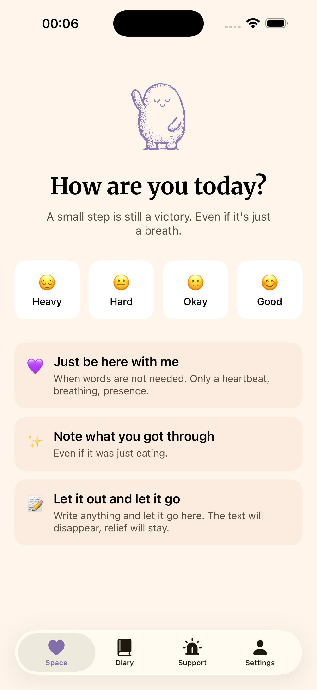
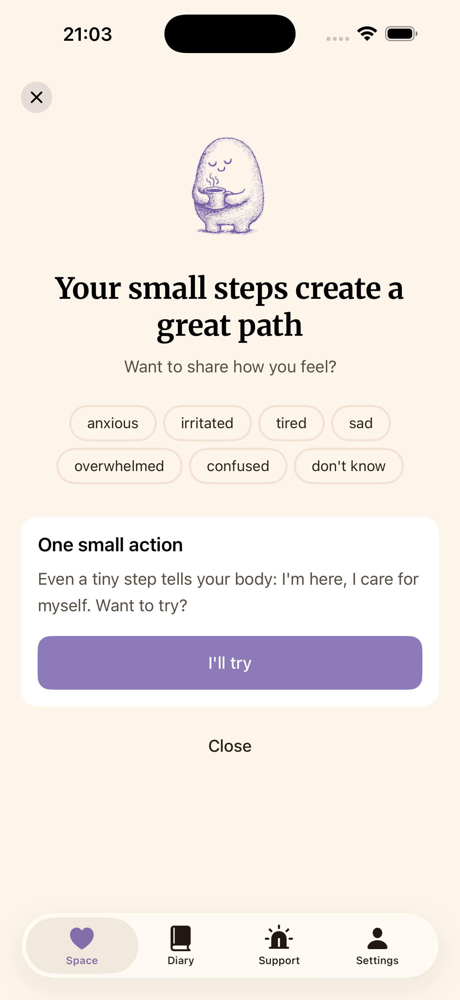
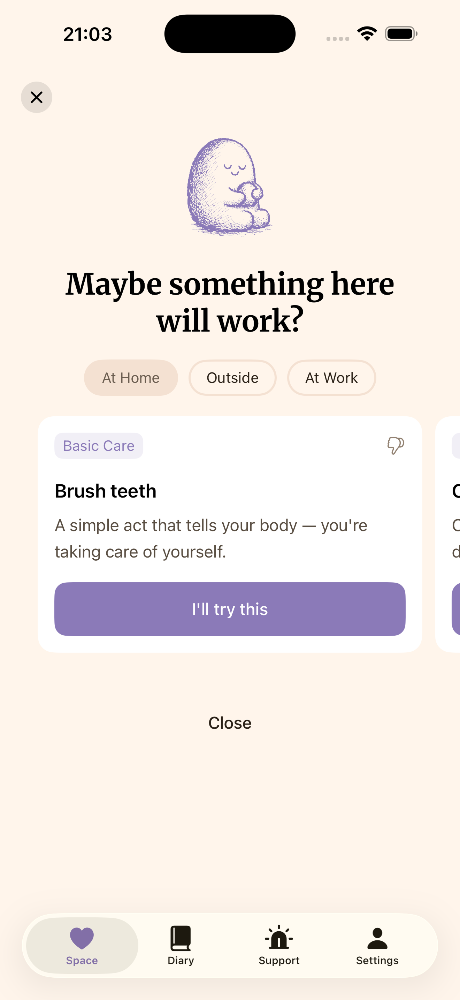
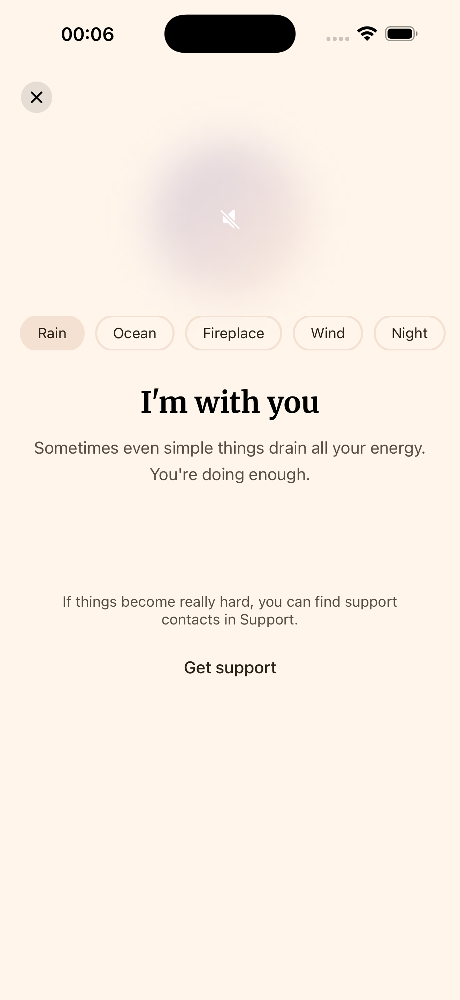
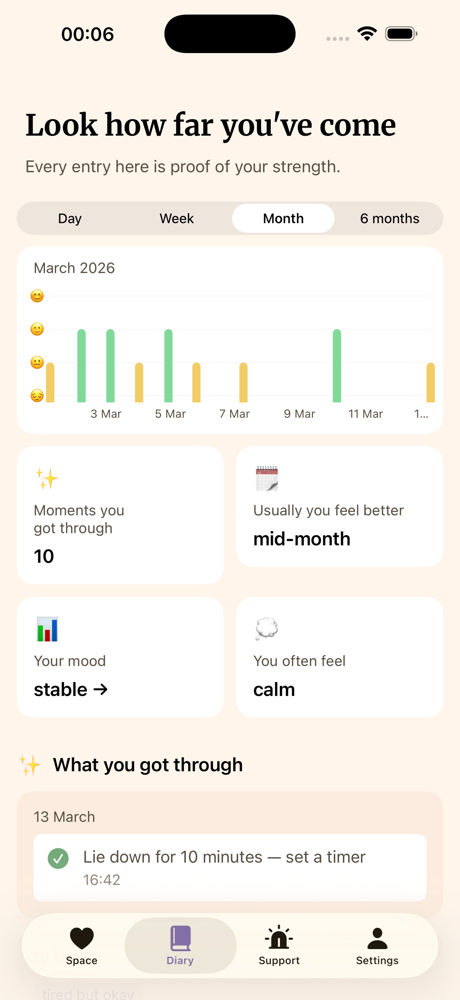

A mental health companion app for people living with depression, burnout, and emotional overload. Designed and shipped from zero to App Store in 4 days — product vision, UX, visual design, tone of voice, and a fully functional iOS app built with AI.
Most mental health apps are built around productivity: streaks, goals, daily habits. They work well for people with moderate stress. But for someone in a depressive episode — when getting out of bed is a victory — these apps feel like another thing to fail at.
I wanted to create something different: a companion that meets you where you are, with zero pressure and zero judgment. Not a therapy replacement, but a quiet place to land when you need one.
Before designing Still Space, I mapped the mental health app landscape to understand where existing products fall short — especially for users in acute emotional states.
| Still Space | Headspace | Calm | Daylio | Bearable | |
|---|---|---|---|---|---|
| Core approach | Adaptive companion for crisis & low-energy states | Guided meditation & mindfulness | Sleep stories, meditation & soundscapes | Micro-journaling & mood tracking | Symptom & mood tracking for chronic illness |
| Designed for depressive episodes | ✓ Core focus | ✗ | ✗ | ✗ | Partial |
| Adaptive to energy level | ✓ 4 levels | ✗ | ✗ | ✗ | ✗ |
| Streak-free / no guilt mechanics | ✓ | ✗ Streaks & badges | Minimal | ✗ Streaks & badges | ✓ |
| Crisis resources built-in | ✓ Hotlines in 6 countries | ✗ Redirects to 911 | ✗ | ✗ | ✗ |
| Actionable micro-tasks | ✓ ~150 tasks by energy level | Meditation only | Meditation only | ✗ Logging only | ✗ Tracking only |
| Privacy-first (no data sharing) | ✓ | ✗ Shares with ad networks | ✗ Shares with marketers | ✓ Local storage | ✓ |
| Ukrainian & Russian | ✓ | ✗ | ✗ | ✓ | ✗ |
| Pricing | Free | $69.99/yr | $79.99/yr | $35.99/yr | $34.99/yr |
Key insight: Most mental health apps are built for general wellness — meditation, habit tracking, journaling. None of them adapt their interface and content to the user's current emotional capacity. When someone can't get out of bed, a 20-minute guided meditation isn't the answer. Still Space fills this gap by offering micro-actions calibrated to energy level, zero-pressure interaction, and crisis support — all without a subscription paywall.
Every word in Still Space is a design decision. The voice is caring, calm, and accepting.
Role: not a therapist, not a coach — a person sitting beside you.
Every design decision starts from one question: "Would this feel safe for someone on their worst day?"
The experience adapts to how you feel right now. Four energy levels, no questionnaires — the app responds with micro-activities matched to your current state.
The entry point adapts to how you feel right now. Four energy levels — Heavy, Hard, Okay, Good — each with its own set of 7 emotion words to choose from. For Heavy: emptiness, hopelessness, guilt. For Okay: calm, hope, gratitude. The Good level skips actions entirely and prompts a gratitude input — because on good days, the best thing you can do is anchor the feeling. Below the check-in, three quick-access cards are always available: "Just be here with me" for breathing and presence, "Note what you got through" for recording small wins, and "Let it out and let it go" for expressive writing that dissolves after release.


After selecting emotions, the app suggests gentle self-care tasks matched to your energy level and context — filterable by location: At Home, Outside, or At Work. Each card shows a category (Breathing & Body, Basic Care, Warmth & Comfort...), a description, and a low-pressure "I'll try this" button. Choosing an action saves it as a pending task — when you return to the app, it's waiting for you on the home screen with a simple "Done" or "Skip."

For when you can't do anything — a pulsing breathing circle with heartbeat haptics and ambient soundscapes: Rain, Ocean, Fireplace, Wind, Night. No instructions, no timers. Just presence. After 5 seconds, a gentle link to crisis support appears — always accessible, never forced. This mode is always free, no paywall.

Mood tracking with day/week/month/6-month views and pattern insights. The diary surfaces gentle observations — "Usually you feel better mid-month," "Your mood is stable" — turning raw data into reassurance. Below the chart, a timeline of completed micro-actions and saved anchors (gratitude notes from good days that reappear as support during hard ones).

Still Space was designed and developed with Claude (Anthropic) as a creative and engineering partner. This wasn't about replacing design thinking — it was about amplifying it.